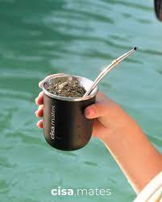

Mate de Madera:
Los mates de madera pueden ser una opción elegante y natural. La madera utilizada a menudo es de alta calidad y puede darle un toque rústico al ritual del mate. Estos mates requieren cuidado y limpieza regular para evitar que se desarrollen mohos.

Mate de Acero Inoxidable:
Los mates de acero inoxidable son duraderos, resistentes y fáciles de limpiar. Son ideales para aquellos que prefieren evitar materiales porosos o buscan una opción más moderna y fácil de mantener.

Mate de Cerámica:
Estos mates están hechos de cerámica y no son porosos como los mates de calabaza. Esto significa que no afectarán el sabor de la yerba mate con el tiempo. Son fáciles de limpiar y pueden tener diseños y colores atractivos.

Mate de Calabaza:
Este es el tipo más tradicional de mate y está hecho de una calabaza vaciada y secada. Es poroso, lo que permite que se absorban los sabores y aromas de la yerba mate. Los mates de calabaza suelen ser apreciados por los amantes del mate debido a su tradición y a la forma en que mejoran el sabor con el tiempo.